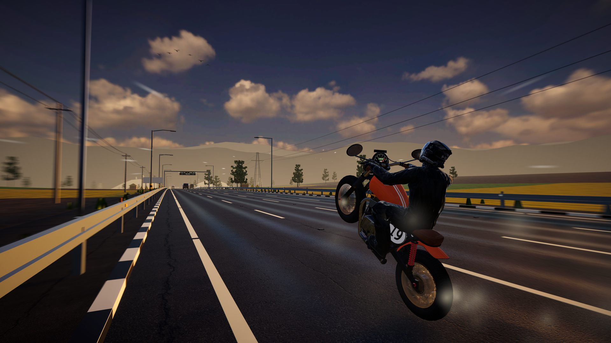
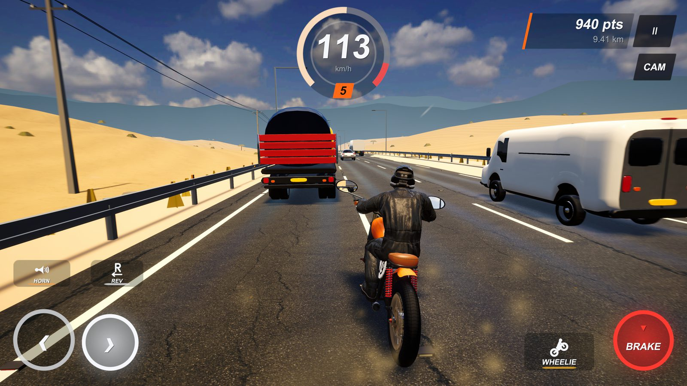
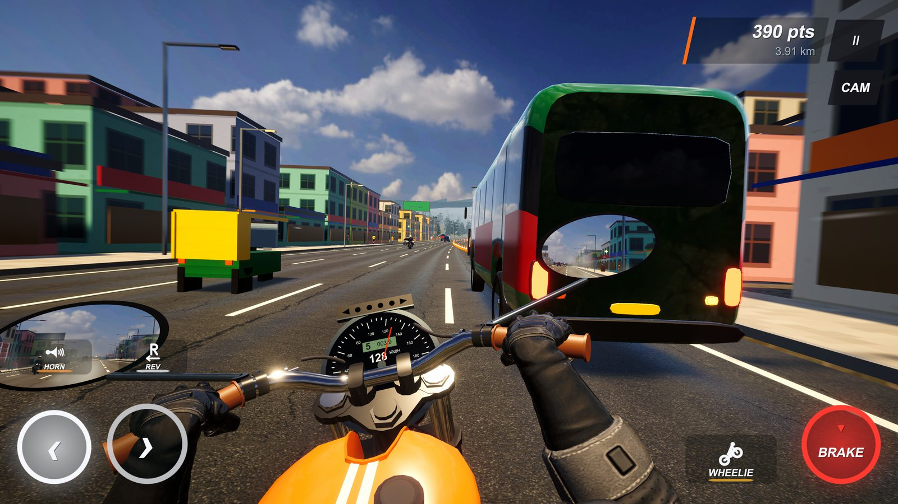
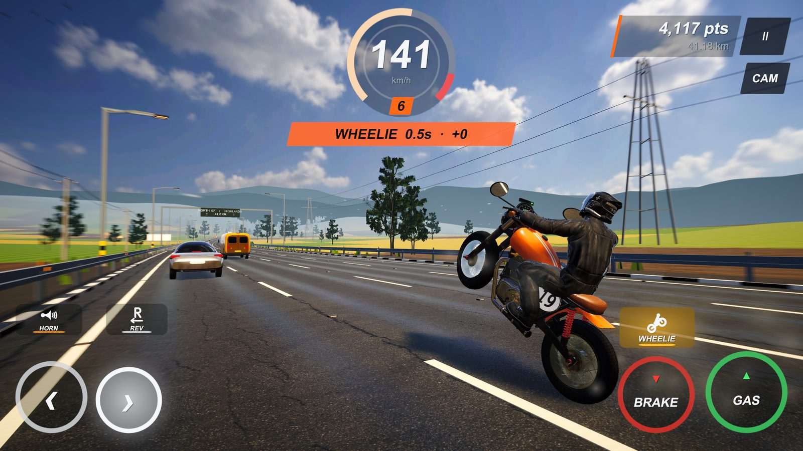
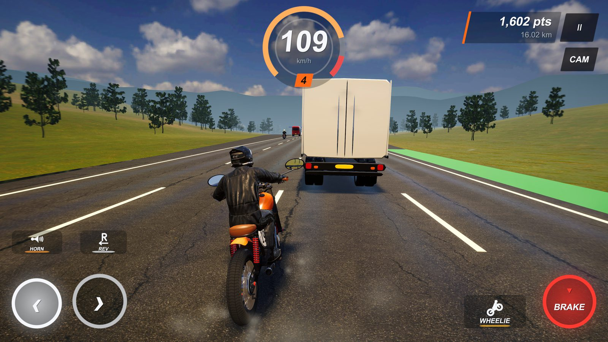
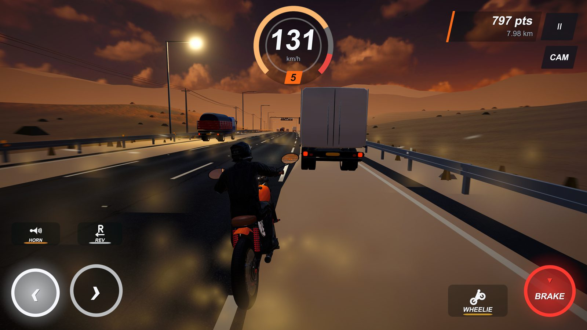
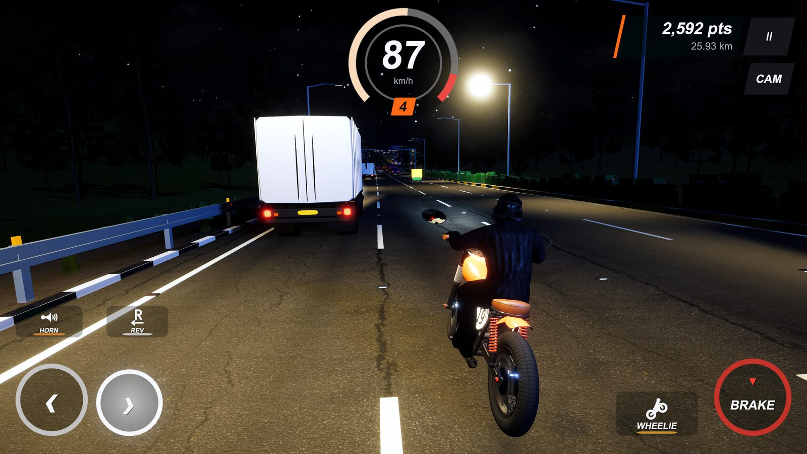
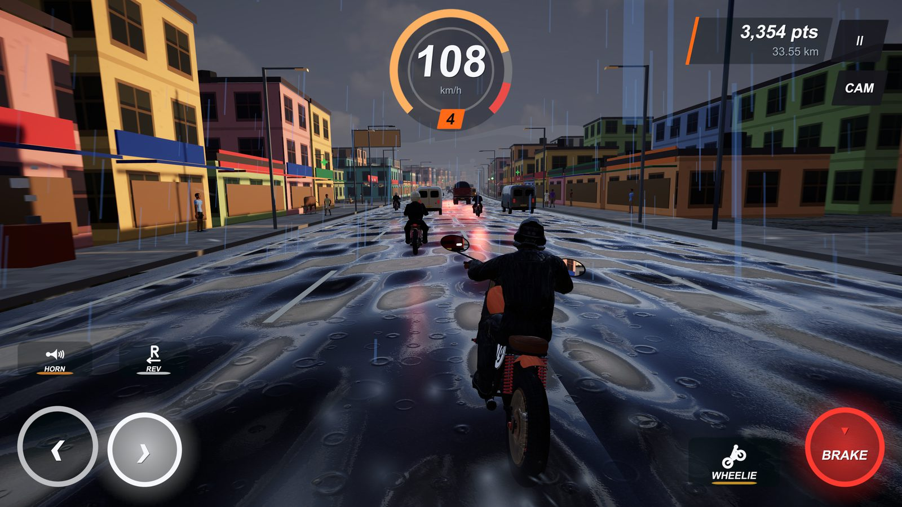
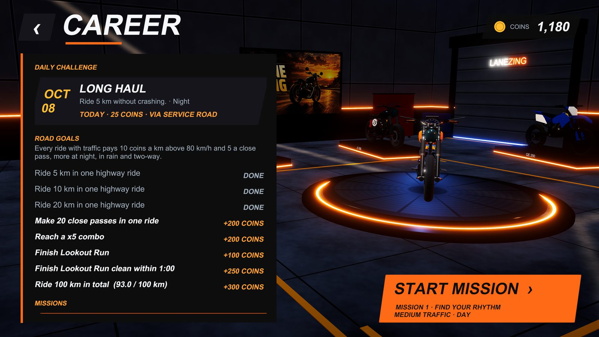

Motorcycle highway game
LANEZING
Weave through traffic, pull wheelies and ride the highway from noon to midnight, rain or shine.
5 bikes10 missions7 languagesFree to play
Forty seconds of real gameplay.
Every gap is a decision.
Cars, vans, trucks and buses drift between lanes, signal before they move and pull over when you honk. Thread between them, build close-pass combos and keep the throttle open as long as you dare.

Thread the traffic
Close passes score, chains of them score more. Traffic reacts to you: indicators, lane changes, brake lights and a horn that clears the lane ahead.

Ride from the saddle
Switch any time between a cockpit view with working mirrors and gauges and a chase camera behind the rider. Steer with buttons, a thumb pad or by tilting the phone.

Wheelie when it's clear
Hold the wheelie above 40 km/h and the streak keeps paying. Brake and the front comes down. Braking always wins.
Noon to midnight, monsoon included.
The sky keeps time while you ride. Street lamps flicker on at dusk, rain turns the tarmac into a mirror and every stretch of road changes as the kilometres add up.




- Forest
- Farmland
- Desert sand
- Town streets
- Tunnels
- Flyovers
- Roadworks
- Toll plaza
- Service road
Five bikes. Earn the rest.
Start on the LZ 650 and earn coins on every ride with traffic. Upgrade acceleration, braking and handling, then pick your paint, stickers and gloves.
| Bike | Character | Top speed | Price |
|---|---|---|---|
| LZ 650Friendly all-rounder. Easy steering, steady in rain. | Friendly all-rounder. Easy steering, steady in rain. | 165 | Starter |
| QE 250Light two-stroke. Quick off the line, out of breath early. | Light two-stroke. Quick off the line, out of breath early. | 150 | 35,000 |
| UX 900Heavy 900 twin. Planted and strong at speed. | Heavy 900 twin. Planted and strong at speed. | 190 | 45,000 |
| JC 650Light cafe racer. Sharp, quick and twitchy. | Light cafe racer. Sharp, quick and twitchy. | 210 | 55,000 |
| QS 800Naked triple. Top speed, big brakes, lively at 200+. | Naked triple. Top speed, big brakes, lively at 200+. | 225 | 70,000 |
Prices are in in-game coins earned by riding. Nothing in the garage costs real money.
A route with ten stops, and a new one every day.
Each mission sets its own conditions: night shifts, monsoon runs, oncoming traffic, a tunnel or a desert crossing. A daily challenge gives every rider the same road for the day, and road goals pay out as your total distance grows.

- Find your rhythm
- Thread the traffic
- Stop on a dime
- Night shift
- Monsoon run
- Open horizon
- Against the flow
- Midnight monsoon
- Tunnel run
- Desert crossing
Set it up for your hands.
Seven languages
English, हिन्दी, Español, Português, Bahasa Indonesia, Deutsch and Français.
Three ways to steer
On-screen buttons, a thumb pad or tilt. Resize the controls and move the horn to either thumb.
Automatic throttle
Let the bike hold the gas and keep both thumbs for steering and braking. Or hold it yourself.
Easy on the eyes
Reduce flashing, switch to a high-contrast HUD with solid panels, or make all the small print larger.
Plays offline
Ride anywhere. Progress stays on your phone and needs no account.
Ads only when you ask
The game is free. A rewarded ad plays only when you tap WATCH AD to double a ride's pay or collect free coins.
Find your gap.
LaneZing is out now on Google Play, free to play on Android phones and tablets. The iPhone and iPad version is coming to the App Store.